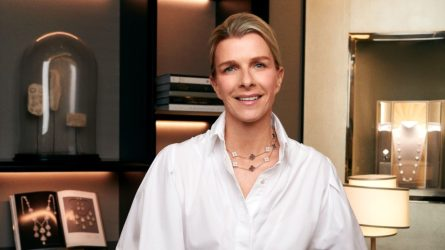
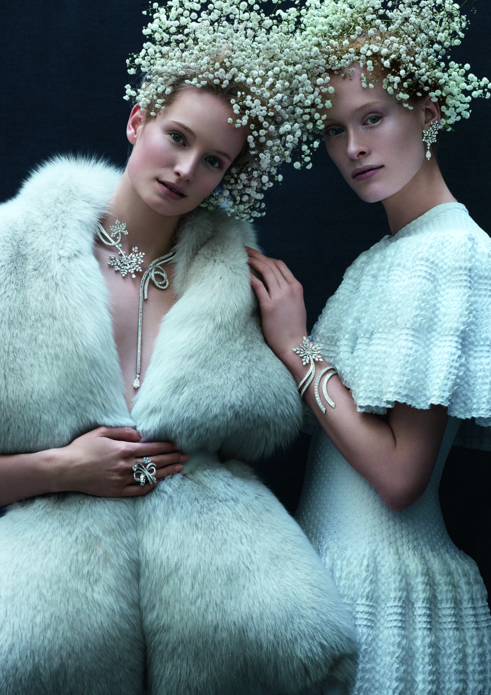
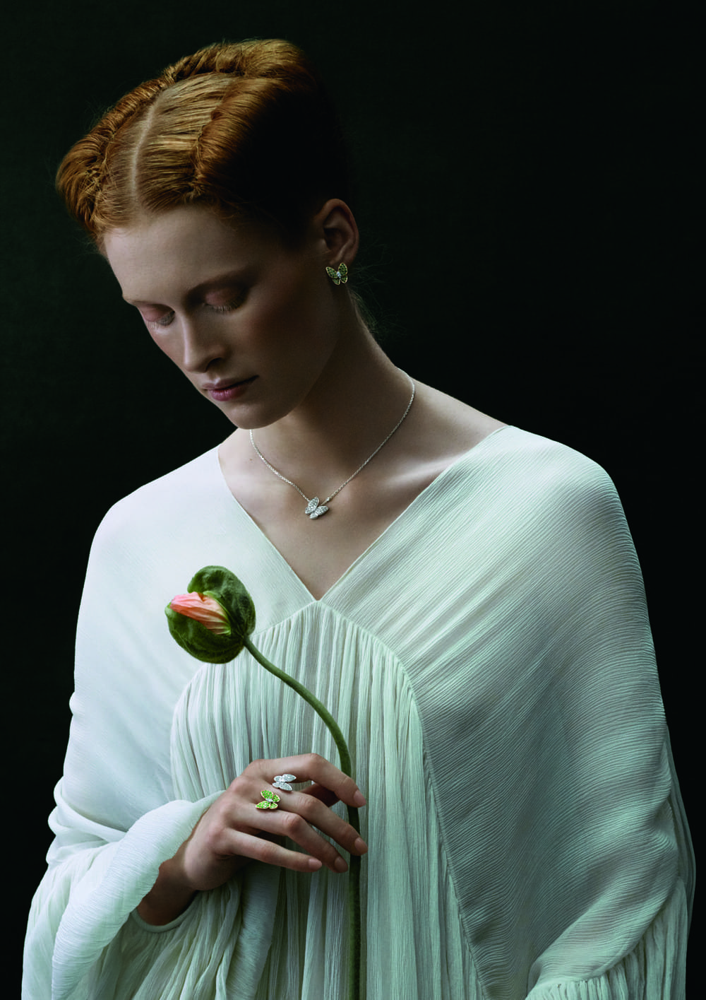

VAN CLEEF & ARPELS: TRANG SỨC LAN TỎA VẺ ĐẸP CỦA THIÊN NHIÊN
Vào một buổi tối đầu tháng 6 tại dinh thự lãnh sự Pháp, thương hiệu trang sức Van Cleef & Arpels đã giới thiệu những BST nữ trang cao cấp lấy cảm hứng từ thiên nhiên thơ mộng và tôn vinh nghệ thuật chế tác savoir faire đỉnh cao.
Trong khuôn viên kiến trúc Indochine mang tính biểu tượng của lãnh sự quán Pháp, Van Cleef & Arpels đã hợp tác cũng nghệ sĩ người Pháp Charlotte Gastaut để tạo ra một không gian thơ mộng lấy cảm hứng từ khu vườn ngập tràn ánh sáng. Trong không gian đó, khách mời được chiêm ngưỡng BST trang sức cao cấp đầy sáng tạo, đó là dây chuyền Zip, những trang sức theo chủ đề hoa, và những tác phẩm đồng hồ có bộ máy phức tạp.
Bắt nguồn từ câu chuyện tình yêu của Alfred Van Cleef và Estelle Arpels, từ năm 1906, Van Cleef & Arpels đã không ngừng nắm giữ trái tim của những tín đồ trang sức khắp thế giới vì các tác phẩm nữ trang “biết kể chuyện”. Từ những chiếc cỏ 4 lá Alhambra tượng trưng cho sự may mắn, những cánh hoa Frivole được đánh bóng như tráng gương, đến những thiết kế trang sức cao cấp high jewelry lấy cảm hứng từ hoa cỏ thiên nhiên, những nàng tiên fairy đến chiếc vòng tay Ludo, vòng cổ Zip, chiếc nhẫn đeo giữa ngón tay với những viên đá ruby được thiết kế bằng kỹ thuật Mysterious Setting… Một kho tàng về nghệ thuật trang sức được mở ra cho quan khách được chiêm ngưỡng và trầm trồ.
KANA Việt Nam đã có dịp trò chuyện với Bà Dorothée Henrio trước thềm sự kiện đầu tiên của bà trong cương vị Giám đốc Điều hành của thương hiệu tại Đông Nam Á.
“NỞ RỘ” KHU VƯỜN ĐẦY NẮNG VỚI CHIẾC VÁY HOA XINH
Váy hoa là một trong những món đồ đặc trưng nhất của aesthetic “garden girl”. Những họa tiết hoa nhỏ xinh, tươi tắn mang đến cảm giác mát mẻ và lãng mạn, tạo nên vẻ ngoài ngọt ngào và duyên dáng. Các cô nàng có thể chọn item đầm hoa với nhiều kiểu dáng khác nhau, từ dáng maxi dài thướt tha đến váy ngắn trẻ trung. Màu sắc của váy hoa thường là những tông màu pastel nhẹ nhàng như hồng, xanh dương, vàng nhạt, mang lại sự dịu dàng và nữ tính. Váy hoa không chỉ phù hợp để dạo phố, đi biển mà còn rất lý tưởng cho những buổi picnic hay các bữa tiệc ngoài trời.

Sự kiện high jewelry đầu tiên của Van Cleef & Arpels tại Việt Nam có ý nghĩa như thế nào với thương hiệu, thưa bà?
Quả thật đây là một sự kiện rất đặc biệt và quan trọng cho Maison. Chúng tôi đã hợp tác cùng nhệ sĩ Pháp Charlotte Gastaut để trang trí cho không gian bằng những tác phẩm của cô, tạo thành một khu vườn lãng mạn và nên thơ. Vẻ đẹp và tinh thần lãng mạn luôn là một phần trong câu chuyện di sản của Van Cleef & Arpels, cũng là một trong những nguồn cảm hứng chính cho những sáng tạo trang sức và cho cả những trải nghiệm mà Maison mong muốn mang đến cho khách hàng của mình. Van Cleef & Arpels là nhà kim hoàn cao cấp, sự khác biệt của thương hiệu đến từ nghệ thuật kể chuyện và chế tác. Chúng tôi cũng mang đến những tác phẩm trang sức theo chủ đề hoa cỏ (floral) tỏa sáng trong khung cảnh rất đặc biệt của sự kiện.
Trên thế giới, Van Cleef & Arpels được biết đến là thương hiệu trang sức cao cấp và đó cũng là thông điệp mà chúng tôi muốn chia sẻ với Việt Nam, một thị trường mới nhưng đầy tiềm năng. Đây cũng là cơ hội để chúng tôi được cùng trải nghiệm những khoảnh khắc đáng nhớ, và cùng vinh danh văn hóa bản địa của Việt Nam.
Điều đáng mong đợi nhất tại sự kiện lần này là gì?
Với đội ngũ của Van Cleef & Arpels và bản thân tôi rất hào hứng khi được gặp gỡ với những vị khách quý, được lắng nghe những cảm nghĩ, chia sẻ của họ để chúng tôi có thể thấu hiểu hơn về sở thích, văn hóa Việt Nam và từ đó có thể mang đến những kỷ niệm và trải nghiệm đáng nhớ.
Tôi hy vọng rằng những vị khách tham dự sẽ cảm nhận được vẻ đẹp diệu kỳ của khu vườn, sẽ tận hưởng những câu chuyện thú vị đằng sau từng tác phẩm trang sức mà chúng tôi mang đến, và qua đó sẽ hiểu hơn về những giá trị văn hóa rất đặc biệt của thương hiệu Van Cleef & Arpels. Tôi mong rằng họ sẽ có khoảng thời gian thật đặc biệt.

Có sự tương đồng như thế nào giữa giá trị của Maison và văn hóa Việt Nam? Thương hiệu dự định sẽ đánh dấu sự hợp tác, trao đổi văn hóa ấy như thế nào?
Được thành lập từ năm 1906, di sản lâu đời là một phần rất quan trọng trong câu chuyện của Van Cleef & Arpels. Chúng tôi cũng có sự kết nối đặc biệt với thế giới văn hóa và nghệ thuật. Ví dụ như nghệ thuật múa ballet hiện diện rất nổi bật trong những sáng tạo của Maison, giống như nguồn cảm hứng từ thiên nhiên. Chúng tôi cũng nhấn mạnh câu chuyện về nghệ thuật thủ công, sự tinh hoa của những nghệ nhân làm nên các tác phẩm kinh điển. Khi đến Việt Nam, văn hóa – nghệ thuật cũng là lĩnh vực mà chúng tôi muốn tìm hiểu để được cùng đồng hành và hỗ trợ cho các dự án, nghệ sĩ, cộng đồng tại Việt Nam trong tương lai.
Ngoài ra, sứ mệnh chia sẻ và truyền đạt kiến thức về lịch sử, nghệ thuật chế tác trang sức cũng rất quan trọng với chúng tôi. Năm 2012, L’École – Trường về Nghệ thuật Trang sức được thành lập với sự tham gia của Van Cleef & Arpels, đến nay đã có mặt tại Paris, Hồng Kông, Thượng Hải… truyền đạt kiến thức về lịch sử, nghệ thuật và kỹ thuật chế tác trang sức. Bất cứ ai yêu thích và quan tâm đến trang sức đều có thể ghi danh theo học tại L’École.
Trong 20 năm gắn bó với tập đoàn Richemont ở nhiều vị trí khác nhau, bà nhận thấy có những thay đổi đáng chú ý nào trong thế giới trang sức cao cấp?
Tôi nhận thấy trong khu vực châu Á và Đông Nam Á, cùng với sự lên ngôi của văn hóa nghệ thuật là sự đón nhận nghệ thuật trang sức cao cấp cũng có sự thay đổi và phát triển đáng kể. Khách hàng ngày càng thấu hiểu và trân trọng những câu chuyện về giá trị di sản của thương hiệu lâu đời như Van Cleef & Arpels. Họ tìm hiểu và đánh giá cao những giá trị đến từ nghệ thuật chế tác thủ công đằng sau từng tác phẩm. Ngoài ra, Van Cleef & Arpels cũng tập trung đem đến những trải nghiệm để cùng đồng hành và kỷ niệm các sự kiện quan trọng trong cuộc sống, tất cả đều được đón nhận nồng nhiệt.

Ngoài các BST nổi tiếng như Alhambra và Perlée, bà mong muốn khách hàng tại Việt Nam được biết gì thêm về Maison?
Nói đến Van Cleef & Arpels là nói đến nghệ thuật kể chuyện. Từ điểm bắt đầu là câu chuyện tình yêu của Van Cleef và Arpels, sau đó là những câu chuyện cảm hứng về tình yêu và thiên nhiên. Chúng tôi không ngừng sáng tạo để viết tiếp câu chuyện về vẻ đẹp và sự lãng mạn của cuộc sống. Chắc chắn phải nhắc đến tác phẩm đồng hồ trong BST Lover’s Bridge, nơi đôi tình nhân gặp nhau vào nửa đêm trên cầu ở Paris. Chiếc vòng cổ Zip cũng là một tác phẩm biểu tượng của Maison, hay những chiếc cài áo với dáng hình các vũ công ballet đầy uyển chuyển.
Sự cải tiến trong kỹ thuật chế tác cũng là điều chúng tôi đặc biệt tự hào. Cải tiến bắt nguồn từ những kỹ thuật độc quyền để hướng đến vẻ đẹp hoàn thiện và làm hài lòng những người yêu cái đẹp. Điều này có thể thấy rất rõ với kỹ thuật Mysterious Setting của Maison được giới thiệu vào những năm 1933 và được hoàn thiện tại workshop của Maison ở Paris. Đó là một kỹ thuật đặc biệt chi tiết, chuẩn xác để nâng đỡ và làm nổi bật những viên đá quý. Kỹ thuật này đòi hỏi người nghệ nhân có ít nhất 10 năm kinh nghiệm để được truyền dạy và thực hành trong nhiều năm tiếp theo sau đó.
Điều bà mong mỏi sẽ đạt được trong vị trí Giám đốc Điều hành của Van Cleef & Arpels khu vực Đông Nam Á là gì?
Tôi mong mỏi sẽ được gặp gỡ, tiếp xúc với các khách hàng của Maison, tại boutique hoặc tại các sự kiện. Với đội ngũ của mình, chúng tôi sẽ tiếp tục lan tỏa những giá trị kinh điển từ di sản của thương hiệu, từ những câu chuyện chế tác để tiếp tục chia sẻ nguồn cảm hứng đó với những đối tác, những người bạn đồng hành của chúng tôi với hy vọng rằng thế giới trang sức cao cấp sẽ ngày càng trở nên cuốn hút và đáng khám phá. Boutique tại Việt Nam là một cột mốc quan trọng của chúng tôi, và tôi vô cùng hứng khởi để tìm hiểu và bắt đầu chuẩn bị cho những dự án hợp tác về văn hóa và nghệ thuật trong tương lai.
Cảm ơn bà về cuộc trò chuyện này.